Steering Wheel Position Sensor Centering
Steering Wheel Position Sensor Centering
Removal Procedure
Important: Identify the type of steering wheel position sensor from the illustrations shown BEFORE removing the sensor from the steering column. Once you have identified the steering wheel position sensor, follow the instructions listed in the removal procedure.
1. Verify the type of steering wheel position sensor.
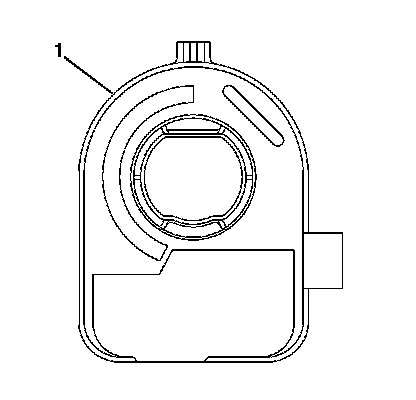
2. From the technicians point of view, the FRONT of the sensor (1) connector will be on the right.
Important: If reusing the existing sensor, you do not have to align the sensor before removal. Centering is not required when it is time to reinstall.
3. Remove the connector from the sensor.
4. Remove the sensor (1) from the adapter and bearing assembly.
5. To install the sensor, proceed to step 1 in the installation section.
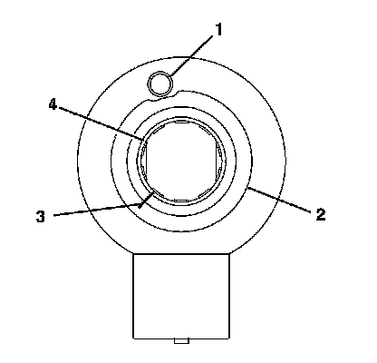
6. From the technicians point of view, the FRONT of the sensor will have:
* A foam ring (2)
* A pin hole (1) for centering the pin-Note the location of the pin hole.
* A flush rotor flange cuff (4)
Important: If reusing the existing sensor, you must make an alignment mark on the rotor flange cuff (3) before removing the sensor. Failure to do so will cause misalignment when installing the sensor. A new sensor will be required if misaligned.
7. Make an alignment mark on the flush rotor flange cuff (3).
8. Remove the connector from the sensor.
9. Remove the sensor from the adapter and bearing assembly.
10. To install the sensor, proceed to step 5 in the installation procedure.
11. From the technicians point of view, the FRONT of the sensor will have:
* A raised rotor flange cuff (3)
* An alignment mark (2) on the rotor flange cuff (3) for installation
* A pin hole (1) for the centering pin-Note the location of the pin hole.
12. Remove the connector from the sensor.
13. Remove the sensor from the adapter and bearing assembly.
14. To install the sensor, proceed to step 9 in the installation procedure.
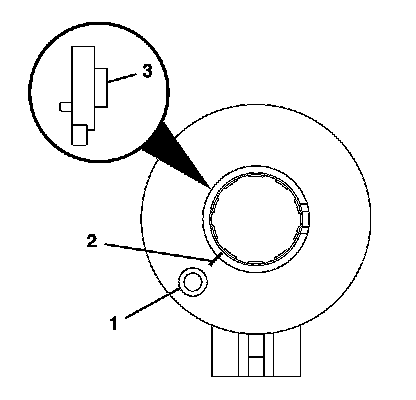
15. From the technicians point of view, the FRONT of the sensor will have:
* A raised rotor flange cuff (3)
* An alignment mark (2) on the rotor flange cuff (3) for installation
* A pin hole (1) for the centering pin-Note location of the pin hole.
* A sensor clip in FRONT of the sensor
16. Remove the connector from the sensor.
17. Remove the sensor clip from the sensor.
18. Remove the sensor from the adapter and bearing assembly.
19. To install the sensor, proceed to step 13 in the installation procedure.
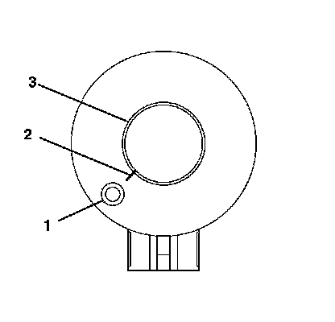
20. From the technicians point of view, the FRONT of the sensor will have:
* A flush rotor flange cuff (3)
* A pin hole (1) for the centering pin-Note the location of the pin hole.
* An alignment mark (2) on the flush rotor flange cuff (3) for installation
21. Remove the connector from the sensor.
22. Remove the sensor from the adapter and bearing assembly.
23. To install the sensor, proceed to step 17 in the installation procedure.
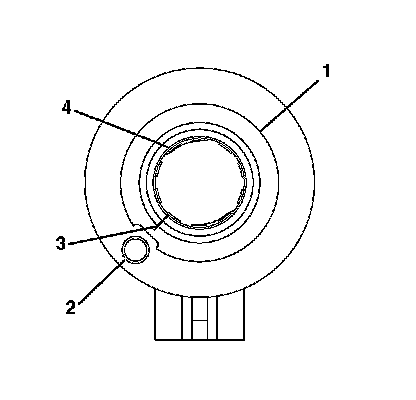
24. From the technicians point of view, the FRONT of the sensor will have:
* A flush rotor flange cuff (4)
* A pin hole (2) for the centering pin-Note the location of the pin hole.
* An alignment mark (3) on the flush rotor flange cuff (4) for installation
* A foam ring (1)
25. Remove the connector from the sensor.
26. Remove the sensor from the adapter and bearing assembly.
27. To install the sensor, proceed to step 21 in the installation procedure.
Installation Procedure
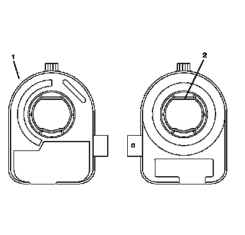
Important: If reusing the existing sensor, no centering of the sensor is required.
1. If installing a new sensor, it will come with a pin installed in the sensor. Do not remove the pin until the sensor is seated.
2. From the technicians point of view, the FRONT of the sensor (1) connector will be on your right.
From the technicians point of view, the BACK of the sensor (2) connector will be on your left.
3. Looking at the FRONT of the sensor, align the sensor with the steering shaft and install into the adapter and bearing assembly.
4. Install the connector to the sensor.
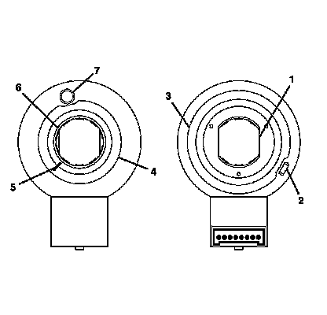
5. From the technicians point of view, the FRONT of the sensor will have:
* A foam ring (4)
* A pin hole (7) for the centering pin-Note the location of the pin hole.
* A flushed rotor flange cuff (6)
* An alignment mark (5) for installation
6. From the technicians point of view, the BACK of the sensor will have:
* Double D flats (1)
* A foam ring (3)
* An alignment tab (2) for installing into the adapter and bearing assembly
* A view of the inside of the connector
Important: If reusing the existing sensor, you must align the marks on the flush rotor flange cuff before installation. The alignment mark must stay aligned until the sensor is seated into the adapter and bearing assembly.
If installing a new sensor, it will come with a pin installed in the sensor. Do not remove the pin until the sensor is seated. If the new sensor did not come with a pin installed, you must reorder a new sensor.
7. Looking at the FRONT of the sensor, align the sensor with the steering shaft and install into the adapter and bearing assembly.
8. Install the connector to the sensor.
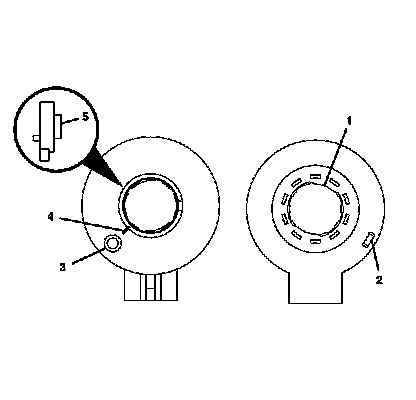
9. From the technicians point of view, the FRONT of the sensor will have:
* A pin hole (3) for the centering pin-Note location of the pin hole.
* A raised rotor flange cuff (5)
* An alignment mark (4) for installation
10. From the technicians point of view, the BACK of the sensor will have:
* Double D flats (1)
* An alignment tab (2) for installing into the adapter and bearing assembly
Important: If reusing the existing sensor, you must align the marks on the raised rotor flange cuff before installation. The alignment mark must stay aligned until the sensor is seated into the adapter and bearing assembly.
If installing a new sensor, it will come with a pin installed in the sensor. Do not remove the pin until the sensor is seated. If the new sensor did not come with a pin installed, you must reorder a new sensor.
11. Looking at the FRONT of the sensor, align the sensor with the steering shaft and install into the adapter and bearing assembly.
12. Install the connector to the sensor.
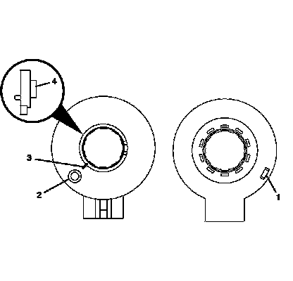
13. From the technicians point of view, the FRONT of the sensor will have:
* A pin hole (2) for the centering pin-Note the location of the pin hole.
* A raised rotor flange cuff (4)
* An alignment mark (3) for installation
14. From the technicians point of view, the BACK of the sensor will have an alignment tab (1) for installation. This sensor does not have double D flats.
Important: If reusing the existing sensor, you must align the marks on the raised rotor flange cuff before installation. The alignment mark must stay aligned until the sensor is seated into the adapter and bearing assembly.
If installing a new sensor, it will come with a pin installed in the sensor. Do not remove the pin until the sensor is seated. If the new sensor did not come with a pin installed, you must reorder a new sensor.
15. Looking at the FRONT of the sensor, align the sensor with the steering shaft and install into the adapter and bearing assembly.
16. Install the connector to the sensor.
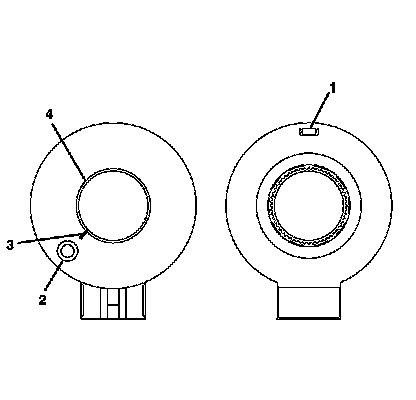
17. From the technicians point of view, the FRONT of the sensor will have:
* A pin hole (2) for the centering pin-Note the location of the pin hole.
* A flush rotor flange cuff (4)
* An alignment mark (3) for installation
18. From the technicians point of view, the BACK of the sensor will have an alignment tab (1) for installation. This sensor does not have double D flats.
Important: If reusing the existing sensor, you must align the marks on the flush rotor flange cuff before installation. The alignment mark must stay aligned until the sensor is seated into the adapter and bearing assembly.
If installing a new sensor, it will come with a pin installed in the sensor. Do not remove the pin until the sensor is seated. If the new sensor did not come with a pin installed, you must reorder a new sensor.
19. Looking at the FRONT of the sensor, align the sensor with the steering shaft and install into the adapter and bearing assembly.
20. Install the connector to the sensor.
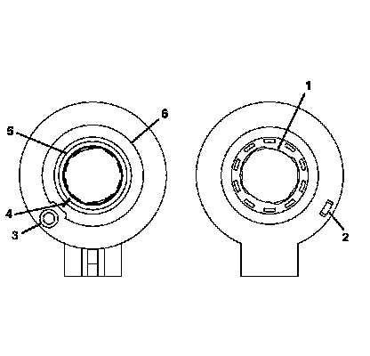
21. From the technicians point of view, the FRONT of the sensor will have:
* A pin hole (3) for the centering pin-Note location of the pin hole.
* A flush rotor flange cuff (5)
* An alignment mark (4) for installation
* A foam ring (6)
22. From the technicians point of view, the BACK of the sensor will have:
* Double D flats (1)
* An alignment tab (2) for installing into the adapter and bearing assembly
Important: If reusing the existing sensor, you must align the marks on the flush rotor flange cuff before installation. The alignment mark must stay aligned until the sensor is seated into the adapter and bearing assembly.
If installing a new sensor, it will come with a pin installed in the sensor. Do not remove the pin until the sensor is seated. If the new sensor did not come with a pin installed, you must reorder a new sensor.
23. Looking at the FRONT of the sensor, align the sensor with the steering shaft and install into the adapter and bearing assembly.
24. Install the connector to the sensor.